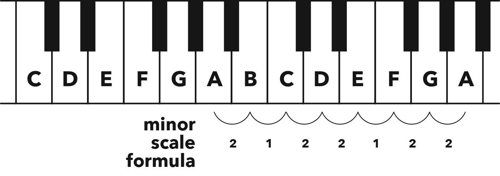

Minor Scale & Relatives 小调与关系调
Hack
When you start on the 6th note of a major scale (the ‘happy scale’), you get a minor scale, aka natural minor scale (nicknamed the ‘sad scale’).
当你从大调音阶的第六个音（“快乐音阶”）开始时，你会得到一个小调音阶，即自然小调音阶（昵称“悲伤音阶”）。
By using one of the other notes within a scale as your root, you create different emotions without changing any notes.
通过使用音阶中的其他音符作为根音，你可以在不改变任何音符的情况下创造出不同的情感。
For example, if you emphasise the 6th note in the C major scale as your root, you get the A minor scale.
例如，如果你强调 C 大调音阶的第六个音符作为根音，你会得到 A 小调音阶。
And vice versa: if you’re in A minor and you want the major scale hiding within, emphasise the 3rd note (i.e. C) as your root.
反之亦然：如果你在 A 小调中并想找到隐藏在其中的大调音阶，你可以强调第三个音符（即 C）作为根音。
These two scales are relatives, or relative scales, as they are scales that have the same notes, but a different root (i.e. they start in a different place).
这两个音阶是关系调或相对音阶，因为它们包含相同的音符，但根音不同（即它们从不同的地方开始）。
The relative major is the scale you get when you start on the 3rd note of a minor scale.
关系大调是从小调音阶的第三个音开始的音阶。
The relative minor is the scale you get when you start on the 6th note of a major scale.
关系小调是从大调音阶的第六个音开始的音阶。
The formula for the natural minor scale is derived from playing all the white notes on a piano, starting on A.
自然小调音阶的公式是从 A 开始弹奏钢琴上的所有白键得出的。
Counted in semitones, it is: 2 1 2 2 1 2 2
以半音为单位，它是：2 1 2 2 1 2 2

Figure 5.1 Minor scale, aka natural minor scale, formula derived from white notes, starting on A
图 5.1 自然小调音阶公式，从 A 开始的白键得出
VOCAB EXTRAS 词汇补充
Key: the scale in use (e.g. a melody in the A minor scale is in the key of A minor)
调性：所使用的音阶（例如，使用 A 小调音阶的旋律属于 A 小调）
Key signature: the sharps or flats in a scale (e.g. F♯ and C♯ in D major – see Figure 4.2)
调号：音阶中的升号或降号（例如 D 大调中的 F♯ 和 C♯——见图 4.2）
Chapter
Music is life’s sonic mirror, and life sure ain’t rainbows and narwhals all the time (unless you’re incredibly unlucky, as it’s the difficult days that provide us with the best opportunities to learn and grow).
音乐是生活的声音镜像，而生活当然并非时时刻刻都是彩虹和独角鲸（除非你极其倒霉，因为正是那些艰难的日子为我们提供了最佳的学习与成长的机会）。
When things are good, we have the major scale to express our happiness, but when the going gets tough, we need something stronger.
当一切顺利时，我们可以用大调音阶来表达我们的快乐，但当情况变得艰难时，我们需要更强大的东西。
No, not whiskey.
不，不是威士忌。
We need a scale that can empathise with us in our darker moments, allowing for reflection and then progression.
我们需要一种能够在我们最黑暗的时刻与我们共鸣的音阶，允许我们反思然后进步。
Please meet the minor scale, also known as the natural minor scale.
请认识一下小调音阶，也就是自然小调音阶。
Following the birth of the major scale, an unexpected twin popped out: the minor.
在大调音阶诞生后，意外诞生了一对双胞胎：小调音阶。
From making music using the major scale, it was discovered that the cheerful emotion could be completely flipped by merely accentuating the 6th note of that scale as the root.
通过使用大调音阶创作音乐，人们发现，只需将那个音阶的第六个音作为根音来强调，就能完全翻转那种愉快的情感。
On a piano, if you play the C major scale with your right hand while your left hand plays a low C note, you get that ‘happy’ major vibe.
在钢琴上，如果你用右手弹奏 C 大调音阶，同时左手弹奏一个低音 C，你会得到那种“快乐”的大调氛围。
However, if you play the same C major scale with your right hand, but this time your left hand plays a low A (the 6th note in C major), you get an entirely different atmosphere, a sad and sombre one.
然而，如果你用右手弹奏相同的 C 大调音阶，但这次左手弹奏一个低音 A（C 大调中的第六个音），你会得到一种完全不同的氛围，一种悲伤而阴郁的氛围。
You’ve just turned C major into A minor, without changing any notes.
你只是通过强调不同的音符，将 C 大调变成了 A 小调，而没有改变任何音符。
Take that, David Copperfield! This trick also works the other way around.
这可比大卫·科波菲尔的魔术厉害多了！而且这个技巧还可以反过来使用。
If you’re playing in A minor and want to turn it major, simply emphasise the 3rd note (i.e. C) as the root and suddenly you’re in C major, without changing a note.
如果你在 A 小调中演奏并想将其转换为大调，只需强调第三个音符（即 C，作为根音），你就突然处于 C 大调，而无需改变任何音符。
Like identical twins, these two scales share the same DNA but have totally different personalities, and that’s why they’re called relatives, or relative scales.
如同同卵双胞胎一样，这两个音阶拥有相同的基因，但个性完全不同，因此它们被称为相对音阶。
These scales have exactly the same notes, but a different root (i.e. they start in a different place).
这些音阶拥有完全相同的音符，但根音不同（即它们从不同的地方开始）。
As time went by, the minor scale underwent a couple of tweaks (we’ll get to ’em later), which resulted in the original version becoming known as the natural minor scale in order to differentiate it from its variations.
随着时间的推移，小调音阶经历了一些调整（我们稍后会谈到这些调整），这使得原始版本被称为自然小调，以区别于它的变体。
To conclude, when you count the semitones between each white note on a piano, starting from A, you get the natural minor scale formula: 2 1 2 2 1 2 2
总结一下，当你从 A 音开始数钢琴上的半音时，你会得到自然小调音阶的公式：2 1 2 2 1 2 2
Now it’s time to add some more terms to your music vocabulary, and, as always, I encourage you to insert them into your everyday conversations to annoy people.
现在是时候给你的音乐词汇表中添加一些新词了，和往常一样，我鼓励你在日常对话中使用它们来给别人留下深刻印象。
First up we have key, which refers to the scale in use.
首先我们有“调”，指的是正在使用的音阶。
If you’re composing a song and you make the intro using A minor, you’ll say that intro is in the key of A minor.
如果你在创作一首歌，并用 A 小调音阶做引子，那么你会说这首歌的引子是 A 小调的。
Next we have key signature, which is the sharps or flats in a scale.
接下来是“调号”，指的是音阶中的升号或降号。
So the key signature of D major (discussed in the previous chapter) is F♯ and C♯.
所以 D 大调的调号（在上一章中讨论过）是 F♯ 和 C♯。
This will be helpful later…
这以后会很有用……
Last, can we please take a moment to marvel at the life lesson that music is teaching us through relative keys?
最后，我们是否可以花一点时间来赞叹音乐通过相对音阶告诉我们的生活教训？
You can interpret every situation from two contrasting views: positive or negative.
你可以从两个相反的视角来解读每一种情况：积极或消极。
This always reminds me of my childhood, growing up ten minutes down the road from the Khayelitsha township in Cape Town.
这总是让我想起我的童年，我住在开普敦郊外距离凯西利沙镇十分钟车程的地方。
I’d see children there who couldn’t even afford shoes, joyfully running around barefoot, truly happy and thankful to be alive.
我看到那里的孩子们连鞋都买不起，却光着脚快乐地跑来跑去，真的很幸福和感谢能够活着。
They’re living a minor melody, but their choice to highlight the 3rd note turns everything to major.
他们生活在小调旋律中，但他们选择强调第三个音，将一切转变成大调。
Then on the opposite extreme, many people in wealthy countries are living major melodies, but corporations work relentlessly to brainwash the masses via a bombardment of advertisements into focusing on the 6th note and feeling the relative minor.
在另一个极端，许多富裕国家的人们在过着大调的生活，但大公司却通过广告轰炸不断地洗脑大众，让他们关注第六个音符并感受相对小调的情绪。
And, of course, the only way you can ‘fix’ your life is to buy their products.
当然，唯一能够“提升”你生活的方式就是购买他们的产品。
We can all learn a lot from music, and from the inspirational children of Khayelitsha.
我们都能从音乐以及凯西利沙那些充满启发的孩子们身上学到很多东西。
When life gives you a major scale, enjoy it with gratitude while sharing it, and when life gives you a minor scale, start on the 3rd!
当生活给你一个大调音阶时，怀着感恩的心去享受并分享它；当生活给你一个小调音阶时，从第三个音开始吧！